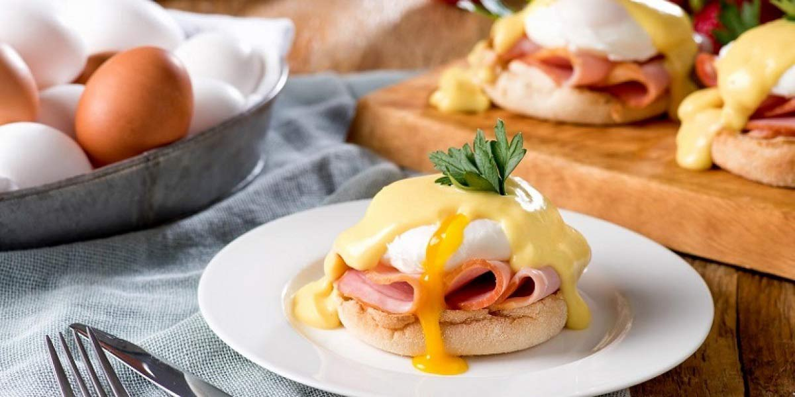

English Muffin
Recipe Specification
Ingredients List
| Ingredients | Quantity |
|---|---|
| Plain Flour | 450g |
| Table Salt | 1 tsp |
| Whole Milk | 225ml |
| Caster Sugar | 1 tsp |
| Dried Yeast | 10g |
| Unsalted Butter | 50g |
| Vegetable Oil | 60ml |
Yield: 10-12 Muffins
Preparation
- Mix milk with 70ml of water, add to saucepan and heat to 50’C
- Remove pan from heat and add Yeast and sugar, mix and leave to rest for 8 minutes.
- Sift flour and Salt in a bowl and make a well in the centre.
- Pour Milk into middle of well and mix gradually until the dough starts to come away from side
- Flour a work surface and tip out dough before kneading for 10 minutes.
- Place dough in a bowl and clingfilm before leaving in a warm place to prove for 45 minutes.
- Once dough has doubled in size, tip out on to a floured surface, roll out to a 1 inch thickness and cut out into 3 inch discs.
- Repeat this process until all dough is used up and place discs on a grease proofed tray before loosely covering with cling film. Keep in a warm place to prove for a further 25-30 minutes.
Cooking Instructions
- Place large frying pan over a medium heat.
- Add vegetable oil and butter to the pan and allow butter to melt but not brown.
- Place dough discs in frying pan, turn down to a medium/low heat and fry for 7 minutes per side.

Serving Suggestions
English muffins are great for cutting in half and filling. My favourite filling combinations include, Fried egg and bacon, scrambled egg, smoked salmon and poached egg and ham and cheese.
Storing instructions
Allow English Muffin to come down to room temperature on wire rack before placing in an air-tight container and placing in a bread bin. This food item contains no preservatives and should be kept for no longer than 5 days.
Reheating Instructions
Cut in half and place in the toaster.